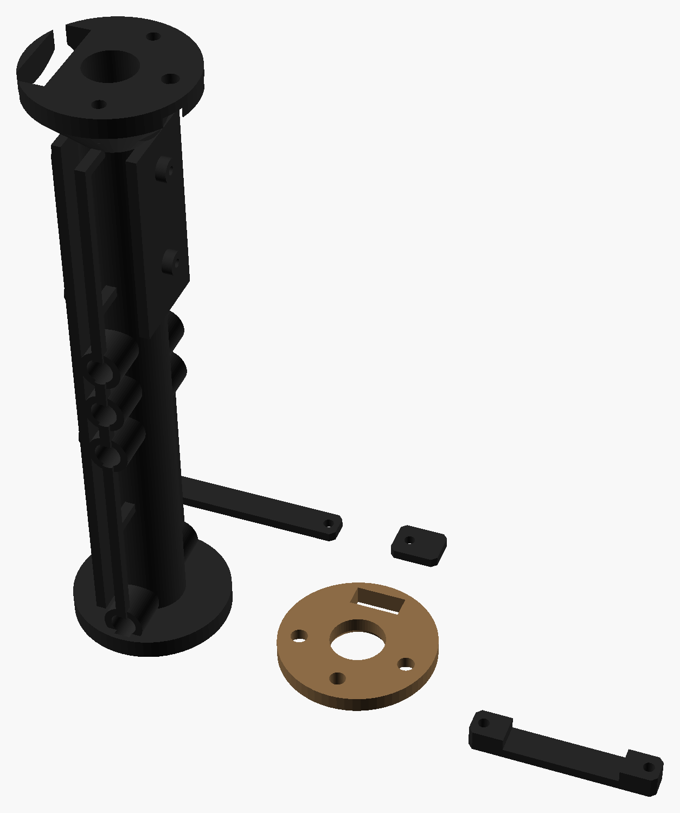

Um cartucho impresso que entra no tubo do seu silenciador, no lugar da espuma. Quando a BB passa, 6 LEDs ultravioleta piscam e a BB traçante (fosforescente) sai brilhando: à noite você vê para onde ela foi e corrige o tiro. Por fora o rifle fica igual. Medidas em milímetros.
Encoste um cartão de crédito/débito na tela e mova o controle até o retângulo ter exatamente o mesmo tamanho (85,6 × 54 mm).
px/mmpecas.scad (ou você muda SIL_DI e SIL_LI no começo do arquivo).Por que intermediário: o sensor é o mesmo do cronógrafo (04), mas o UV precisa acender no mesmo instante em que a BB passa (ela anda 14 cm por milésimo de segundo a 450 fps) e tudo tem de caber num tubo de 32 mm.
| Situação | O que acontece |
|---|---|
| BB passa pelo tubo do cartucho | Corta o feixe infravermelho logo na entrada; a placa acende os 6 LEDs UV por 2 ms. Eles ficam em volta do tubo, de 50 a 70 mm à frente do sensor |
| BB traçante | É uma BB fosforescente (verde ou vermelha): carrega com o UV e brilha por 1–2 s no voo. Só funciona com BB traçante; BB comum passa normal |
| Rajada | Ignora o sensor por 15 ms depois de cada BB (até ~60 BB/s): cada BB ganha o seu pulso |
| 5 min sem atirar | Apaga o feixe e dorme. O sensor de vibração acorda a placa no próximo tiro (esse primeiro tiro não brilha: dê 1 tiro "de acordar") |
| Ao acordar | O LED da frente pisca a bateria: 3 = cheia, 2 = média, 1 = carregue |
| Bateria fraca | 1 piscada longa a cada 5 s no LED da frente |
| Carregar | Tire a tampa da frente do silenciador: o USB-C do cartucho fica ali, ao lado do furo da BB |
Todas as peças impressas, nas cores de impressão (coyote e preto); cada peça sai de uma cor só. Arquivos em 3D/stl; quantidades, ferragens e configuração no 3D/LEIA-ME.txt.

| Componente | Medidas (mm) | Função |
|---|---|---|
| ESP32-C3 SuperMini (do kit do 04) | 22,5 × 18 | Vê a BB, acende o UV e dorme |
| 6 LEDs UV 5 mm 395 nm + 6 resistores 6,8 Ω | Ø 5 | Carregam a BB traçante (pulso de ≈ 120 mA cada, por 2 ms) |
| Par LED IR + fototransistor 5 mm, LM393 e trimpot 10 kΩ (do kit do 04) | Ø 5 | Barreira que vê a BB, igual ao cronógrafo |
| MOSFET IRLZ44N + 100 Ω + 10 kΩ | TO-220 deitado | Liga os 6 LEDs UV juntos |
| Sensor de vibração SW-18010P + 100 kΩ | Ø 4 × 7 | Acorda a placa no tiro |
| LiPo 402030 3,7 V ≈ 200 mAh, com conector | 4 × 20 × 30 | Bateria (≈ 5 h ligado; desconecte para guardar) |
| TP4056 USB-C (do kit do 04) | 28 × 17 | Carrega pela frente |
| LED 3 mm verde + 330 Ω | Ø 3 | Estado: bateria e cada BB detectada |
| Perfurada 26 × 16 (plaquinha de sinal) | 26 × 16 | LM393, trimpot, MOSFET, sensor de vibração e resistores |
| BB traçante 0,25 g (verde) | Ø 6 | A BB que brilha (vende em pote) |
Peças impressas (pasta 3D) | — | chassi, frente, 3 presilhas |
Sem escala. Todos os GND juntos. Não tem chave: a placa dorme sozinha. A barreira é a mesma de uma barreira do cronógrafo (04).
| De | Para | Observação |
|---|---|---|
| LiPo +/− | TP4056 B+/B− | Pelo conector: desconecte para guardar por mais de uma semana |
| TP4056 OUT+ / OUT− | C3 5V / GND · "BAT+" dos LEDs UV e do divisor | Sem chave (a placa dorme sozinha) |
| GPIO10 | 150 Ω → LED IR (anodo); catodo no GND | Feixe (desliga quando dorme) |
| Fototransistor (coletor) | 10 kΩ → 3V3 e LM393 IN−; emissor no GND | Trimpot de 10 kΩ entre 3V3 e GND, meio no IN+ |
| LM393 OUT | GPIO3 (+ 10 kΩ para o 3V3) | Se não detectar, troque BB_BORDA para RISING |
| GPIO4 | 100 Ω → gate do IRLZ44N; 10 kΩ do gate para o GND | Liga os 6 LEDs UV |
| GPIO2 | sensor de vibração → GND; 100 kΩ → 3V3 | Acorda a placa |
| GPIO5 | 330 Ω → LED 3 mm → GND | LED de estado (na frente) |
| GPIO1 | meio do divisor 100k/100k entre BAT+ e GND | Mede a bateria |
SIL_DI e SIL_LI no 3D/pecas.scad. Imprima o chassi em pé, apoiado no disco de trás.TRACANTE/TRACANTE.ino e passe um palito pelo feixe: o LED UV deve piscar.Valores de out/2026, sem frete, só produtos novos (os links do Mercado Livre já abrem com o filtro "Novo"). Não achei os preços exatos nas buscas: são estimativas de anúncios comuns; confira antes de comprar. Peças impressas não entram. "Kits do 04" = cronógrafo.
| Item | Onde | Fica para | Menor | Maior |
|---|---|---|---|---|
| Conjunto: kit 10 LEDs UV 5 mm 395 nm (usa 6) | Mercado Livre | reserva | R$ 10,00 | R$ 20,00 |
| LiPo 402030 3,7 V ≈ 200 mAh com conector | Mercado Livre | — | R$ 20,00 | R$ 35,00 |
| Conjunto: kit 10 sensores de vibração SW-18010P (usa 1) | Mercado Livre | reserva | R$ 8,00 | R$ 15,00 |
| MOSFET IRLZ44N | Mercado Livre | 08, 14 | R$ 4,00 | R$ 8,00 |
| Conjunto: kit parafusos M2 (usa 7) | Mercado Livre | 04, 11 | R$ 10,00 | R$ 20,00 |
| BB traçante 0,25 g (pote) | Mercado Livre | — | R$ 40,00 | R$ 80,00 |
| ESP32-C3, par IR, LM393, trimpot, TP4056, LED 3 mm, resistores | kits do 04 e do 01 | — | R$ 0,00 | R$ 0,00 |
| Total reaproveitando os kits do 01 e do 04 | ≈ R$ 92 | ≈ R$ 178 | ||
| Total do zero (comprando também os kits de C3, TP4056, par IR, LM393 e trimpot) | ≈ R$ 237 | ≈ R$ 390 | ||